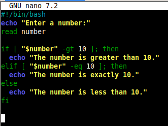

Basic Bash Shell Scripting
What is Bash Shell Scripting?
Bash (Bourne Again Shell) is a command language and shell for Unix-based systems. Bash shell scripting refers to writing a sequence of commands in a file to automate tasks, often involving file operations, user input, loops, and system administration.
Why and When is Bash Scripting Beneficial?
- Automating repetitive administrative tasks (e.g., backups, updates).
- Creating quick solutions for system monitoring or file manipulation.
- Running a sequence of commands without human interaction.
- Configuring environments or software setups.
- Saving time and reducing human error through automation.
Bash Scripting Fundamentals
#!/bin/bash — shebang line to specify the interpreter.
The first line of nearly every Bash script starts with #!/bin/bash, the shebang (#!), followed by the Bash interpreter.
This tells the system how to execute the script - in this case, using the bash shell located at /bin/bash.
How it works: When you make the script executable (e.g., with chmod +x script.sh and run it like ./script.sh, the system:
- Looks at the first line.
- Sees #!/bin/bash
- Passes the script to /bin/bash, the Bash interprter for execution
Without this line, the system may try to use the default shell (which might not be bash) or just fail to run it properly.
echo — prints text to the screen.
read — takes user input.
if/else — conditional logic.
Conditional logic allows your script to make decisions.


for/while — loop structures.
For Loop:
Used when you know how many times to repeat something.


You can also loop over files:


While Loop:
Used when the loop should continue while a condition is true

functions — reusable blocks of code.
Functions help you organize code, avoid repetition, and break things into logical parts.
Script Examples
1. Hello World Script

2. User Input

3. File Existence Check


4. For Loop

5. Simple Backup Script
6. Function Example


Conclusion
In this demonstration, we explored the fundamentals of Bash shell scripting, a powerful and essential tool for anyone working with Linux systems. We began with an introduction and highlighted the benefits of scripting, such as automating repetitive tasks, improvoing efficiency, and enabling scalable manaagement.
We then broke down the core scripting concepts, including:
- The purpose of the shebang (#!/bin/bash), which defines the bash interpreter to run the script.
- How to write conditional logic using if, else, and elif statements for decision-making.
- Looping structures like
for and while to repeat tasks with minimal code
- The use of functions to modularize and reuse code, making scripts easier to maintain.
Through hands-on examples, we demonstrated how to apply each of these concepts in simple, real-world use cases. Whether you're building your first automation script or laying the groundwork for more complex systems administration, understanding these Bash scripting basics is a foundational step toward becoming more efficient and versatile in the command-line environment.
As you continue your learning journey, try modifying these examples or creating your own scripts to reinforce your understanding. Bash scripting is a skill that improves with consistent practice — and it’s one of the most valuable tools in any Linux or DevOps toolkit.